pacman::p_load(tidyverse, ggplot2, scales, ggridges, corrplot)Take-home Exercise 1 - Technical Report
1 Overview
1.1 Background
Motor vehicle insurance consists of heterogeneous customer segments, varying levels of risk exposure, and complex claim behaviours. Insurers rely on data-driven analytical methods to understand the factors influencing portfolio profitability and volatility. Such insights are essential for underwriting, pricing, risk management and strategic business growth decisions.
Traditional reporting approaches for motor vehicle insurance focus on descriptive dashboard summaries. This limits the discovery of hidden relationships and emerging risk patterns within the data. Visual analytics extends beyond static reporting by integrating statistical analysis with exploratory visualisation techniques to uncover meaningful insights from large and complex datasets.
This study applies visual analytics techniques using R, tidyverse ecosystem, ggplot2, and its extensions to identify key drivers associated with profitability and volatility within a motor vehicle insurance portfolio.
1.2 Objectives
The objectives of this study are:
- To explore the distributions and characteristics of numerical, categorical, and temporal variables within the insurance portfolio.
- To apply visual analytics techniques and investigate factors influencing profitability and volatility.
- To statistically validate relationships identified through exploratory visualisations.
- To uncover hidden insights that support effective data-driven decision-making within the insurance industry.
1.3 Analytical Questions
The study seeks to answer the following key analytical questions:
- Which customer and vehicle characteristics are associated with higher insurance profitability?
- Which policyholder segments demonstrate higher volatility and risk concentration?
- Are there observable temporal trends in premiums, claims, and losses across the portfolio?
1.4 The Dataset
The dataset used in this study is a real-world motor vehicle insurance portfolio taken from a Spanish non-life insurance company. It contains 354 140 policy records across multiple years and includes 47 variables related to policyholder demographics, vehicle attributes, premium information, claim frequencies, incurred losses, and exposure measures.
The dataset provides a suitable foundation for investigating portfolio profitability and risk volatility. The dataset and its descriptions can be downloaded from Mendeley Data.
2 Load Packages
2.1 Set Analytical Tools
The following packages are required to be loaded in Rstudio before the start of the data analysis.
- The tidyverse family of packages is used extensively for data wrangling and transformation.
- ggplot2 and its extensions support advanced visual analytics and exploratory visualisation.
- scales is used for axis formatting and percentage labelling.
- ggridges enables distribution comparison through ridgeline plots.
- corrplot is used to visualise correlation matrix.
The step below is used to load the necessary packages.
3. Data Preparation and Wrangling
3.1 Import Data
The dataset is in csv format and uses semicolons (;) as column delimiters, while using standard periods (.) for decimals. To import the dataset and prevent R from condensing the entire header into a single cell, read_delim() from the readr library is used to define the delimiter.
# Use ; to identify separate columns in the csv file
insurance_data <- read_delim(
"data/Dataset of motor insurance portfolio.csv",
delim = ";",
escape_double = FALSE,
trim_ws = TRUE
)# Verify the number of rows and columns in the csv file
dim(insurance_data)[1] 354140 47
Note
The original data set has 354140 rows of records and 47 variables.
3.2 Initial Data Examination
The steps below are used to provide a better understanding of the dataset structure before going into data wrangling decisions.
First, the first 5 records in the dataset is displayed to have an overview of the data types for each variable.
head(insurance_data, 5) %>%
knitr::kable()| insured_id | year | policy_type | policy_status | business_type | payment_frequency | bonus_score | driver_age | vehicle_age | age_driving_licence | fuel_type | vehicle_value | seats | power_to_weight_ratio | vehicle_brand | municipality_type | circulation_area | total_premium | liability_premium | property_damage_premium | theft_premium | fire_premium | glass_premium | legal_protection_premium | occupants_premium | total_claims | liability_claims | liability_property_claims | liability_injury_claims | property_claims | theft_claims | fire_claims | glass_claims | legal_protection_claims | occupants_claims | total_incurred | liability_incurred | liability_property_incurred | liability_injury_incurred | property_incurred | theft_incurred | fire_incurred | glass_incurred | legal_protection_incurred | occupants_incurred | total_exposure | liability_exposure |
|---|---|---|---|---|---|---|---|---|---|---|---|---|---|---|---|---|---|---|---|---|---|---|---|---|---|---|---|---|---|---|---|---|---|---|---|---|---|---|---|---|---|---|---|---|---|---|
| 1 | 2022 | COMP_E | C | NB | A | G | 48 | 22 | 26 | G | 149511.44 | 4 | 3.92 | PORSCHE | I | U | 279.5576 | 30.60232 | 121.9127 | 112.36149 | 3.832441 | 8.305788 | 2.043622 | 0.4992053 | 0 | 0 | 0 | 0 | 0 | 0 | 0 | 0 | 0 | 0 | 0.000 | 0.000 | 0.000 | 0 | 0.000 | 0 | 0 | 0 | 0 | 0 | 0.0986301 | 0.0986301 |
| 2 | 2022 | COMP_E | A | P | A | G | 43 | 24 | 19 | D | 65065.12 | 8 | 10.15 | MERCEDES | I | U | 546.6234 | 114.33336 | 303.1060 | 80.78482 | 7.826861 | 30.091751 | 7.812748 | 2.6679084 | 0 | 0 | 0 | 0 | 0 | 0 | 0 | 0 | 0 | 0 | 0.000 | 0.000 | 0.000 | 0 | 0.000 | 0 | 0 | 0 | 0 | 0 | 1.0000000 | 1.0000000 |
| 2 | 2023 | COMP_E | A | P | A | G | 44 | 25 | 19 | D | 65065.12 | 8 | 10.15 | MERCEDES | I | U | 548.7526 | 110.66689 | 304.9560 | 83.52138 | 6.151465 | 32.861626 | 7.655636 | 2.9395659 | 1 | 1 | 1 | 0 | 0 | 0 | 0 | 0 | 0 | 0 | 233.013 | 233.013 | 233.013 | 0 | 0.000 | 0 | 0 | 0 | 0 | 0 | 1.0000000 | 1.0000000 |
| 2 | 2024 | COMP_E | A | P | A | G | 45 | 26 | 18 | D | 65065.12 | 8 | 10.15 | MERCEDES | I | U | 584.6324 | 122.09253 | 305.2251 | 107.88687 | 5.842892 | 31.101584 | 10.084173 | 2.3992827 | 2 | 1 | 1 | 0 | 1 | 0 | 0 | 0 | 0 | 0 | 2586.361 | 1035.000 | 1035.000 | 0 | 1551.361 | 0 | 0 | 0 | 0 | 0 | 1.0000000 | 1.0000000 |
| 3 | 2022 | COMP_E | A | NB | S | G | 45 | 26 | 19 | D | 51626.66 | 7 | 9.19 | KIA | I | R | 687.4905 | 214.58399 | 354.8741 | 53.07762 | 7.715765 | 48.574298 | 6.700700 | 1.9639955 | 0 | 0 | 0 | 0 | 0 | 0 | 0 | 0 | 0 | 0 | 0.000 | 0.000 | 0.000 | 0 | 0.000 | 0 | 0 | 0 | 0 | 0 | 1.0000000 | 1.0000000 |
Next, the general distribution of each variable is generated.
summary(insurance_data) insured_id year policy_type policy_status
Min. : 1 Min. :2022 Length:354140 Length:354140
1st Qu.: 33342 1st Qu.:2023 Class :character Class :character
Median : 66840 Median :2023 Mode :character Mode :character
Mean : 76045 Mean :2023
3rd Qu.:112949 3rd Qu.:2024
Max. :185678 Max. :2024
business_type payment_frequency bonus_score driver_age
Length:354140 Length:354140 Length:354140 Min. :18.00
Class :character Class :character Class :character 1st Qu.:39.00
Mode :character Mode :character Mode :character Median :48.00
Mean :49.01
3rd Qu.:58.00
Max. :90.00
vehicle_age age_driving_licence fuel_type vehicle_value
Min. : 0.00 Min. : 0.00 Length:354140 Min. : 1630
1st Qu.:17.00 1st Qu.:19.00 Class :character 1st Qu.: 18608
Median :25.00 Median :20.00 Mode :character Median : 24730
Mean :25.92 Mean :22.99 Mean : 26977
3rd Qu.:35.00 3rd Qu.:25.00 3rd Qu.: 32252
Max. :68.00 Max. :80.00 Max. :374034
NA's :2 NA's :2 NA's :513
seats power_to_weight_ratio vehicle_brand municipality_type
Min. :2.000 Min. : 0.00 Length:354140 Length:354140
1st Qu.:5.000 1st Qu.:10.74 Class :character Class :character
Median :5.000 Median :12.05 Mode :character Mode :character
Mean :5.084 Mean :12.33
3rd Qu.:5.000 3rd Qu.:13.73
Max. :9.000 Max. :64.81
circulation_area total_premium liability_premium property_damage_premium
Length:354140 Min. : 0.0 Min. : 0.00 Min. : 0.00
Class :character 1st Qu.: 146.1 1st Qu.: 92.52 1st Qu.: 0.00
Mode :character Median : 257.9 Median : 165.78 Median : 0.00
Mean : 296.7 Mean : 180.71 Mean : 73.52
3rd Qu.: 385.0 3rd Qu.: 237.83 3rd Qu.: 83.62
Max. :5107.6 Max. :2320.77 Max. :3736.73
theft_premium fire_premium glass_premium
Min. : 0.000 Min. : 0.0000 Min. : 0.000
1st Qu.: 1.808 1st Qu.: 0.2889 1st Qu.: 7.417
Median : 5.902 Median : 0.8644 Median : 15.387
Mean : 11.249 Mean : 1.5105 Mean : 19.497
3rd Qu.: 13.519 3rd Qu.: 1.8182 3rd Qu.: 26.912
Max. :1047.036 Max. :72.0891 Max. :387.608
legal_protection_premium occupants_premium total_claims liability_claims
Min. : 0.000 Min. : 0.0000 Min. : 0.0000 Min. :0.0000
1st Qu.: 3.820 1st Qu.: 0.9441 1st Qu.: 0.0000 1st Qu.:0.0000
Median : 7.262 Median : 1.8261 Median : 0.0000 Median :0.0000
Mean : 8.268 Mean : 1.9651 Mean : 0.2177 Mean :0.1066
3rd Qu.: 10.966 3rd Qu.: 2.6200 3rd Qu.: 0.0000 3rd Qu.:0.0000
Max. :175.056 Max. :68.6461 Max. :18.0000 Max. :8.0000
liability_property_claims liability_injury_claims property_claims
Min. :0.00000 Min. :0.00000 Min. : 0.00000
1st Qu.:0.00000 1st Qu.:0.00000 1st Qu.: 0.00000
Median :0.00000 Median :0.00000 Median : 0.00000
Mean :0.09281 Mean :0.01376 Mean : 0.06295
3rd Qu.:0.00000 3rd Qu.:0.00000 3rd Qu.: 0.00000
Max. :8.00000 Max. :3.00000 Max. :15.00000
theft_claims fire_claims glass_claims
Min. :0.000000 Min. :0.0000000 Min. :0.00000
1st Qu.:0.000000 1st Qu.:0.0000000 1st Qu.:0.00000
Median :0.000000 Median :0.0000000 Median :0.00000
Mean :0.005326 Mean :0.0002824 Mean :0.03271
3rd Qu.:0.000000 3rd Qu.:0.0000000 3rd Qu.:0.00000
Max. :2.000000 Max. :1.0000000 Max. :3.00000
legal_protection_claims occupants_claims total_incurred
Min. :0.000000 Min. :0.0000000 Min. : 0.0
1st Qu.:0.000000 1st Qu.:0.0000000 1st Qu.: 0.0
Median :0.000000 Median :0.0000000 Median : 0.0
Mean :0.009753 Mean :0.0001214 Mean : 208.6
3rd Qu.:0.000000 3rd Qu.:0.0000000 3rd Qu.: 0.0
Max. :2.000000 Max. :1.0000000 Max. :571128.3
liability_incurred liability_property_incurred liability_injury_incurred
Min. : 0.0 Min. : 0.00 Min. : 0.00
1st Qu.: 0.0 1st Qu.: 0.00 1st Qu.: 0.00
Median : 0.0 Median : 0.00 Median : 0.00
Mean : 133.7 Mean : 65.75 Mean : 67.96
3rd Qu.: 0.0 3rd Qu.: 0.00 3rd Qu.: 0.00
Max. :561759.8 Max. :34553.88 Max. :560025.59
property_incurred theft_incurred fire_incurred glass_incurred
Min. : 0.00 Min. : 0.000 Min. :0.000e+00 Min. : 0.00
1st Qu.: 0.00 1st Qu.: 0.000 1st Qu.:0.000e+00 1st Qu.: 0.00
Median : 0.00 Median : 0.000 Median :0.000e+00 Median : 0.00
Mean : 52.66 Mean : 4.511 Mean :7.629e-01 Mean : 12.59
3rd Qu.: 0.00 3rd Qu.: 0.000 3rd Qu.:0.000e+00 3rd Qu.: 0.00
Max. :27542.43 Max. :40324.888 Max. :2.827e+04 Max. :4533.40
legal_protection_incurred occupants_incurred total_exposure
Min. : 0.000 Min. : 0.000 Min. :0.0000
1st Qu.: 0.000 1st Qu.: 0.000 1st Qu.:0.4438
Median : 0.000 Median : 0.000 Median :0.8384
Mean : 3.323 Mean : 1.013 Mean :0.7069
3rd Qu.: 0.000 3rd Qu.: 0.000 3rd Qu.:1.0000
Max. :9889.851 Max. :69000.000 Max. :1.0000
liability_exposure
Min. :0.0000
1st Qu.:0.4438
Median :0.8384
Mean :0.7069
3rd Qu.:1.0000
Max. :1.0000
3.3 Handle Missing Values and Duplicates
The step below identifies the columns with missing values.
# Calculate missing values for all columns
missing_counts <- colSums(is.na(insurance_data))
# Display columns that have at least 1 missing value
missing_counts[missing_counts > 0] vehicle_age age_driving_licence fuel_type vehicle_value
2 2 1287 513 Out of 47 variables, 4 of them have missing values:
- 0.0006% of the records for vehicle_age and age_driving_licence are missing
- 0.145% of the records for vehicle_value are missing
- 0.363% of the records for fuel_type are missing
Since the missing data accounts for less than 0.5% of the total observations, list-wise deletion is applied by removing rows containing missing values. Given the extremely small proportion of missing data, the impact on overall analytical interpretation is expected to be minimal.
The step below handles the missing values.
# Drop any row that contains an NA in these specific columns
insurance_clean <- insurance_data %>%
drop_na(vehicle_age, age_driving_licence, fuel_type, vehicle_value)The step below checks for duplicated values.
# Count number of rows that are completely duplicated
anyDuplicated(insurance_clean) [1] 0There are no duplicated records in the updated insurance_clean dataset.
3.4 Data Type Transformation
There are several variables in the dataset that are recorded in numerical values but should be transformed into categorical data type for more accurate analysis. The step below converts the relevant variables into categorical data types, while ensuring all other columns possess the correct structural attributes for further analysis.
insurance_clean <- insurance_clean %>%
mutate(
# Convert unique ID into text to prevent accidental math operations
insured_id = as.character(insured_id),
# Convert the tracking year into categorical factors
year = as.factor(year),
# Convert all text character columns into categorical factors automatically
across(
where(is.character) & -insured_id, as.factor
)
)
Note
The unique identifier insured_id is transformed into a character string to prevent accidental arithmetic calculations.
The year column is converted into discrete factors to establish independent temporal blocks.
The across() function converts the text columns into categorical factors.
3.5 Feature Engineering
To deepen the profitability and volatility analysis, several key insurance metrics are derived at the individual policy level. The step below implements the calculations using the mutate() function.
insurance_final <- insurance_clean %>%
mutate(
# 1. Net Profit
net_profit = total_premium - total_incurred,
# 2. Loss Ratio
loss_ratio = if_else(
total_premium > 0, total_incurred / total_premium, NA_real_
),
# 3. Claim Frequency
claim_frequency = if_else(
total_exposure > 0.0, total_claims / total_exposure, NA_real_
),
# 4. Claim Severity
claim_severity = if_else(
total_claims > 0.0, total_incurred / total_claims, NA_real_
),
# 5. Claim indicator
has_claim = factor(
if_else(total_claims > 0.0, "Yes", "No")
),
# 6. Driving experience
driving_experience = driver_age - age_driving_licence,
experience_group = cut(
driving_experience,
breaks = c(0, 5, 10, 20, 30, Inf),
labels = c("0-5", "6-10", "11-20", "21-30", "30+"),
include.lowest = TRUE
),
# 7. Vehicle age group
vehicle_age_group = cut(
vehicle_age,
breaks = c(0, 5, 10, 15, 20, Inf),
labels = c("0-5", "6-10", "11-15", "16-20", "20+"),
include.lowest = TRUE #
),
# 8. Driver age group
age_group = cut(
driver_age,
breaks = c(18, 30, 40, 50, 60, Inf),
labels = c("18-30", "31-40", "41-50", "51-60", "60+"),
include.lowest = TRUE
)
)
# Preview the clean metrics
#| message: false
#| warning: false
insurance_final %>%
select(
insured_id, net_profit, loss_ratio, claim_frequency,
claim_severity, has_claim, experience_group,
vehicle_age_group, age_group
) %>%
head(10) %>%
knitr::kable()| insured_id | net_profit | loss_ratio | claim_frequency | claim_severity | has_claim | experience_group | vehicle_age_group | age_group |
|---|---|---|---|---|---|---|---|---|
| 1 | 279.5576 | 0.0000000 | 0 | NA | No | 21-30 | 20+ | 41-50 |
| 2 | 546.6234 | 0.0000000 | 0 | NA | No | 21-30 | 20+ | 41-50 |
| 2 | 315.7396 | 0.4246231 | 1 | 233.013 | Yes | 21-30 | 20+ | 41-50 |
| 2 | -2001.7291 | 4.4239104 | 2 | 1293.181 | Yes | 21-30 | 20+ | 41-50 |
| 3 | 687.4905 | 0.0000000 | 0 | NA | No | 21-30 | 20+ | 41-50 |
| 3 | 693.6705 | 0.0000000 | 0 | NA | No | 21-30 | 20+ | 41-50 |
| 3 | 742.4135 | 0.0000000 | 0 | NA | No | 21-30 | 20+ | 41-50 |
| 4 | 384.9196 | 0.0000000 | 0 | NA | No | 11-20 | 11-15 | 31-40 |
| 4 | 373.1310 | 0.0000000 | 0 | NA | No | 11-20 | 11-15 | 31-40 |
| 4 | 351.1062 | 0.0000000 | 0 | NA | No | 11-20 | 11-15 | 31-40 |
- Net profit - calculates whether a policy is profitable or not.
- Loss ratio - discovers whether premiums sufficiently cover claims.
- Claim frequency - the rate of accidents relative to an active policy.
- Claim severity - the average financial cost tied to an individual claim.
- Claim indicator - allows claim versus non-claim comparisons.
- Driving experience in groups, Vehicle age in groups, Driver age in groups - are all binned to support easier visual analysis.
dim(insurance_final)[1] 352338 56
Note
The final insurance data set carries 352 338 rows and 56 columns.
head(insurance_final, 5) %>%
knitr::kable()| insured_id | year | policy_type | policy_status | business_type | payment_frequency | bonus_score | driver_age | vehicle_age | age_driving_licence | fuel_type | vehicle_value | seats | power_to_weight_ratio | vehicle_brand | municipality_type | circulation_area | total_premium | liability_premium | property_damage_premium | theft_premium | fire_premium | glass_premium | legal_protection_premium | occupants_premium | total_claims | liability_claims | liability_property_claims | liability_injury_claims | property_claims | theft_claims | fire_claims | glass_claims | legal_protection_claims | occupants_claims | total_incurred | liability_incurred | liability_property_incurred | liability_injury_incurred | property_incurred | theft_incurred | fire_incurred | glass_incurred | legal_protection_incurred | occupants_incurred | total_exposure | liability_exposure | net_profit | loss_ratio | claim_frequency | claim_severity | has_claim | driving_experience | experience_group | vehicle_age_group | age_group |
|---|---|---|---|---|---|---|---|---|---|---|---|---|---|---|---|---|---|---|---|---|---|---|---|---|---|---|---|---|---|---|---|---|---|---|---|---|---|---|---|---|---|---|---|---|---|---|---|---|---|---|---|---|---|---|---|
| 1 | 2022 | COMP_E | C | NB | A | G | 48 | 22 | 26 | G | 149511.44 | 4 | 3.92 | PORSCHE | I | U | 279.5576 | 30.60232 | 121.9127 | 112.36149 | 3.832441 | 8.305788 | 2.043622 | 0.4992053 | 0 | 0 | 0 | 0 | 0 | 0 | 0 | 0 | 0 | 0 | 0.000 | 0.000 | 0.000 | 0 | 0.000 | 0 | 0 | 0 | 0 | 0 | 0.0986301 | 0.0986301 | 279.5576 | 0.0000000 | 0 | NA | No | 22 | 21-30 | 20+ | 41-50 |
| 2 | 2022 | COMP_E | A | P | A | G | 43 | 24 | 19 | D | 65065.12 | 8 | 10.15 | MERCEDES | I | U | 546.6234 | 114.33336 | 303.1060 | 80.78482 | 7.826861 | 30.091751 | 7.812748 | 2.6679084 | 0 | 0 | 0 | 0 | 0 | 0 | 0 | 0 | 0 | 0 | 0.000 | 0.000 | 0.000 | 0 | 0.000 | 0 | 0 | 0 | 0 | 0 | 1.0000000 | 1.0000000 | 546.6234 | 0.0000000 | 0 | NA | No | 24 | 21-30 | 20+ | 41-50 |
| 2 | 2023 | COMP_E | A | P | A | G | 44 | 25 | 19 | D | 65065.12 | 8 | 10.15 | MERCEDES | I | U | 548.7526 | 110.66689 | 304.9560 | 83.52138 | 6.151465 | 32.861626 | 7.655636 | 2.9395659 | 1 | 1 | 1 | 0 | 0 | 0 | 0 | 0 | 0 | 0 | 233.013 | 233.013 | 233.013 | 0 | 0.000 | 0 | 0 | 0 | 0 | 0 | 1.0000000 | 1.0000000 | 315.7396 | 0.4246231 | 1 | 233.013 | Yes | 25 | 21-30 | 20+ | 41-50 |
| 2 | 2024 | COMP_E | A | P | A | G | 45 | 26 | 18 | D | 65065.12 | 8 | 10.15 | MERCEDES | I | U | 584.6324 | 122.09253 | 305.2251 | 107.88687 | 5.842892 | 31.101584 | 10.084173 | 2.3992827 | 2 | 1 | 1 | 0 | 1 | 0 | 0 | 0 | 0 | 0 | 2586.361 | 1035.000 | 1035.000 | 0 | 1551.361 | 0 | 0 | 0 | 0 | 0 | 1.0000000 | 1.0000000 | -2001.7291 | 4.4239104 | 2 | 1293.181 | Yes | 27 | 21-30 | 20+ | 41-50 |
| 3 | 2022 | COMP_E | A | NB | S | G | 45 | 26 | 19 | D | 51626.66 | 7 | 9.19 | KIA | I | R | 687.4905 | 214.58399 | 354.8741 | 53.07762 | 7.715765 | 48.574298 | 6.700700 | 1.9639955 | 0 | 0 | 0 | 0 | 0 | 0 | 0 | 0 | 0 | 0 | 0.000 | 0.000 | 0.000 | 0 | 0.000 | 0 | 0 | 0 | 0 | 0 | 1.0000000 | 1.0000000 | 687.4905 | 0.0000000 | 0 | NA | No | 26 | 21-30 | 20+ | 41-50 |
4. EDA on Portfolio Distribution
This section applies appropriate univariate and bivariate visual analytics techniques to investigate the distributions and characteristics of the motor vehicle insurance portfolio.
4.1 Financial Variable Behaviour
4.1.2 Distribution of Incurred Losses
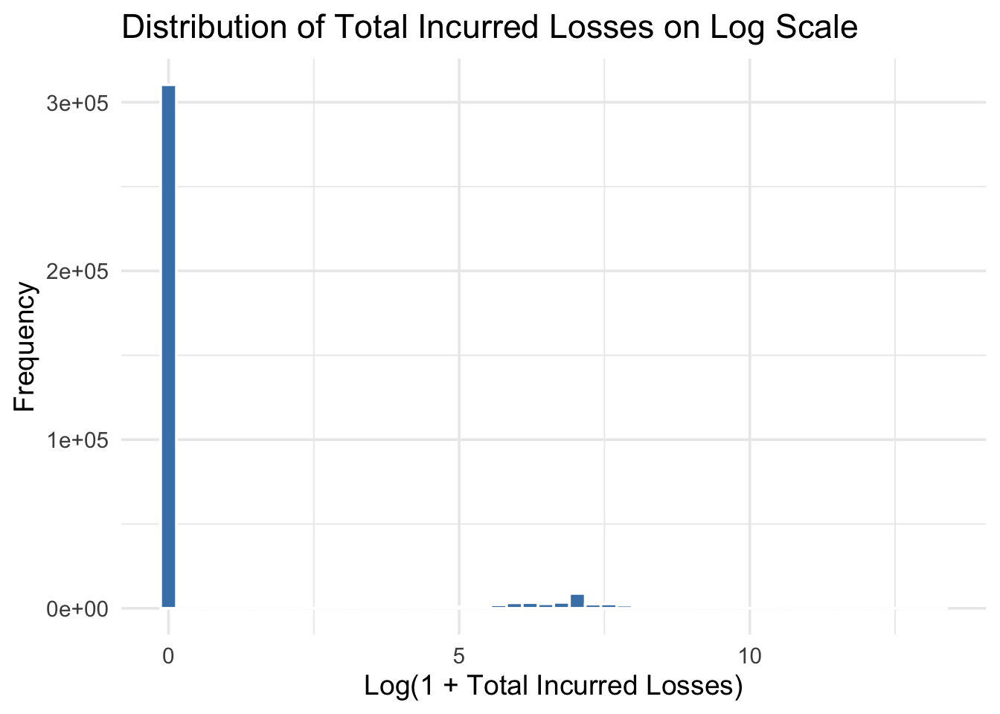
ggplot(
insurance_final,
aes(x = log1p(total_incurred))
) +
geom_histogram(
bins = 50,
fill = "steelblue",
color = "white"
) +
labs(
title = "Distribution of Total Incurred Losses on Log Scale",
x = "Log(1 + Total Incurred Losses)",
y = "Frequency"
) +
theme_minimal(base_size = 14)
Note
Log transformation is applied to improve visual understanding by compressing extreme outliers while preserving the underlying distributional behaviour of insurance claims.
The log-transformed distribution of total incurred losses demonstrates that the portfolio is dominated by policies with little or no financial losses. A relatively small proportion generates more claim events. The heavy concentration near zero indicates that claim occurrence is relatively infrequent, whereas the extended right tail reflects the presence of rare but financially significant losses.
4.1.3 Distribution of Claim Severity
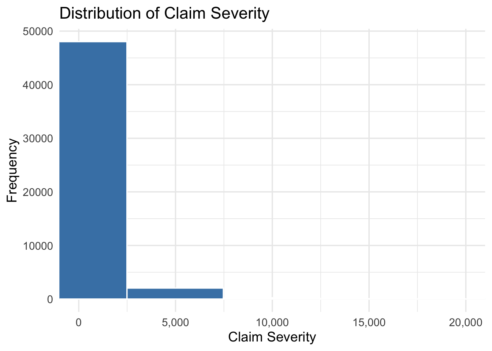
ggplot(
insurance_final,
aes(x = claim_severity)
) +
geom_histogram(
bins = 50,
fill = "steelblue",
color = "white"
) +
coord_cartesian(
xlim = c(0, 20000)
) +
scale_x_continuous(
labels = scales::comma
) +
labs(
title = "Distribution of Claim Severity",
x = "Claim Severity",
y = "Frequency"
) +
theme_minimal(base_size = 14)
Note
The claim severity distribution contains extreme outliers, indicating that a small number of claims generate disproportionately high financial losses.
4.2 Customer Risk Structure
4.2.1 Distribution of Driver Age Groups
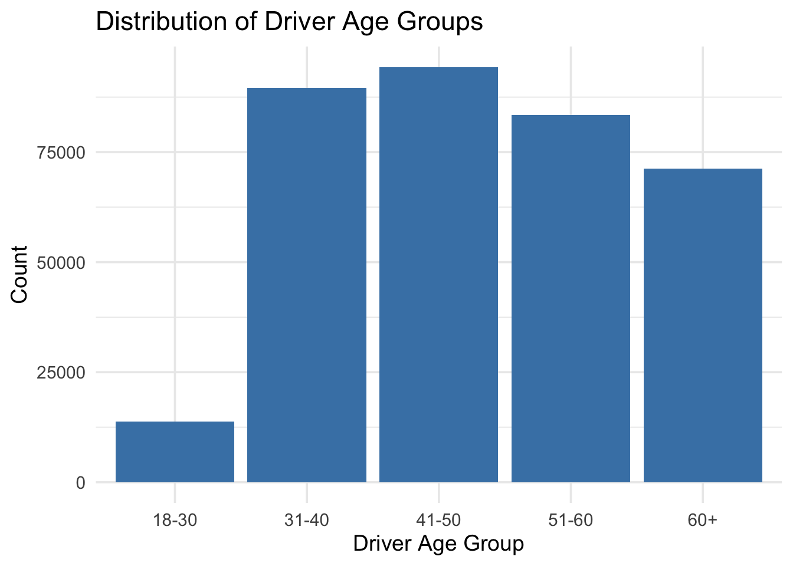
ggplot(
insurance_final,
aes(x = age_group)
) +
geom_bar(fill = "steelblue") +
labs(
title = "Distribution of Driver Age Groups",
x = "Driver Age Group",
y = "Count"
) +
theme_minimal(base_size = 14)
Note
Most of the policyholders are in the 41 to 50 years old age group, followed by 31 to 40 years old and 51 to 60 years old. A very small portion of them are 30 years old and below.
4.2.2 Distribution of Driving Experience Groups
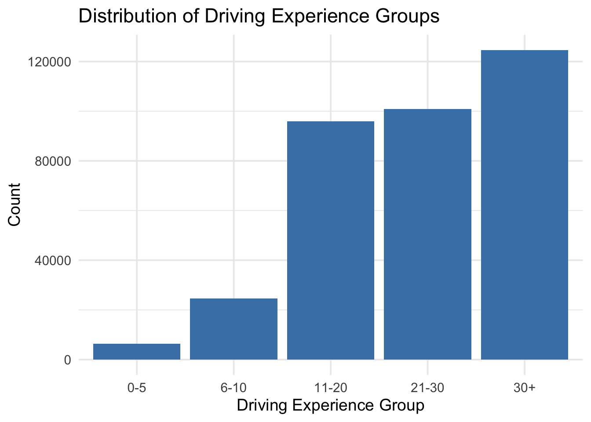
ggplot(
insurance_final,
aes(x = experience_group)
) +
geom_bar(fill = "steelblue") +
labs(
title = "Distribution of Driving Experience Groups",
x = "Driving Experience Group",
y = "Count"
) +
theme_minimal(base_size = 14)
Note
Most of the policyholders have more than 10 years of driving experience. This aligns with distribution of driver age groups where most of them are above 30 years old.
4.2.3 Distribution of Bonus Score
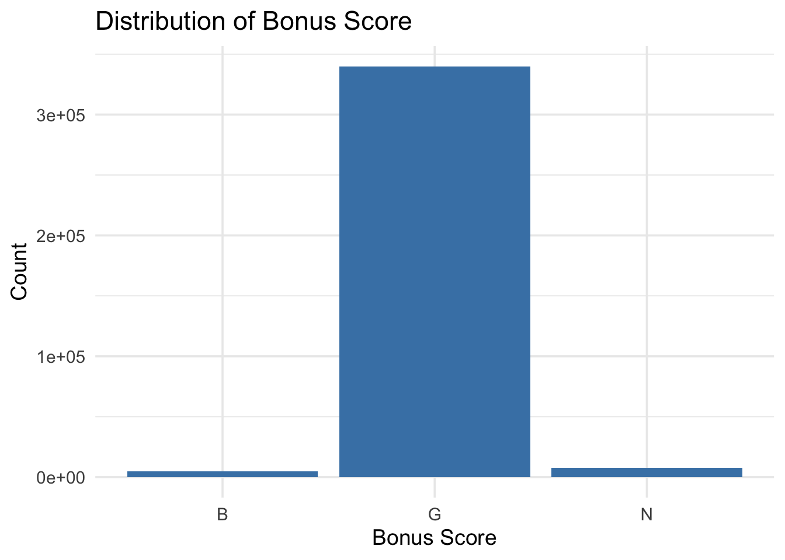
ggplot(
insurance_final,
aes(x = bonus_score)
) +
geom_bar(fill = "steelblue") +
labs(
title = "Distribution of Bonus Score",
x = "Bonus Score",
y = "Count"
) +
theme_minimal(base_size = 14)
Note
Most of the policyholders have a positive bonus score which reflects that they have favourable claims history. This suggests that they are generally less risky policyholders.
4.3 Vehicle Risk Structure
4.3.1 Distribution of Vehicle Value
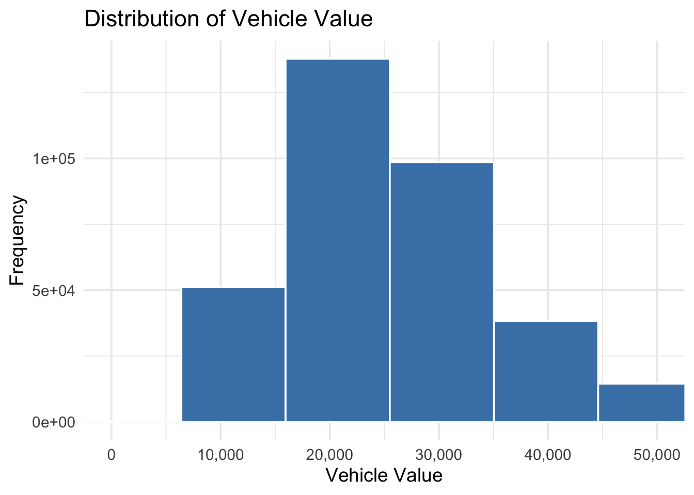
ggplot(
insurance_final,
aes(x = vehicle_value)
) +
geom_histogram(
bins = 40,
fill = "steelblue",
color = "white"
) +
coord_cartesian(xlim = c(0, 50000)) +
scale_x_continuous(labels = scales::comma) +
labs(
title = "Distribution of Vehicle Value",
x = "Vehicle Value",
y = "Frequency"
) +
theme_minimal(base_size = 14)
Note
The vehicle values are right skewed, with most of them ranging between $15 000 to $35 000. This suggests that most insured vehicles are of moderate market values while a smaller segment containing substantially higher-valued vehicles.
4.3.2 Distribution of Vehicle Age Groups
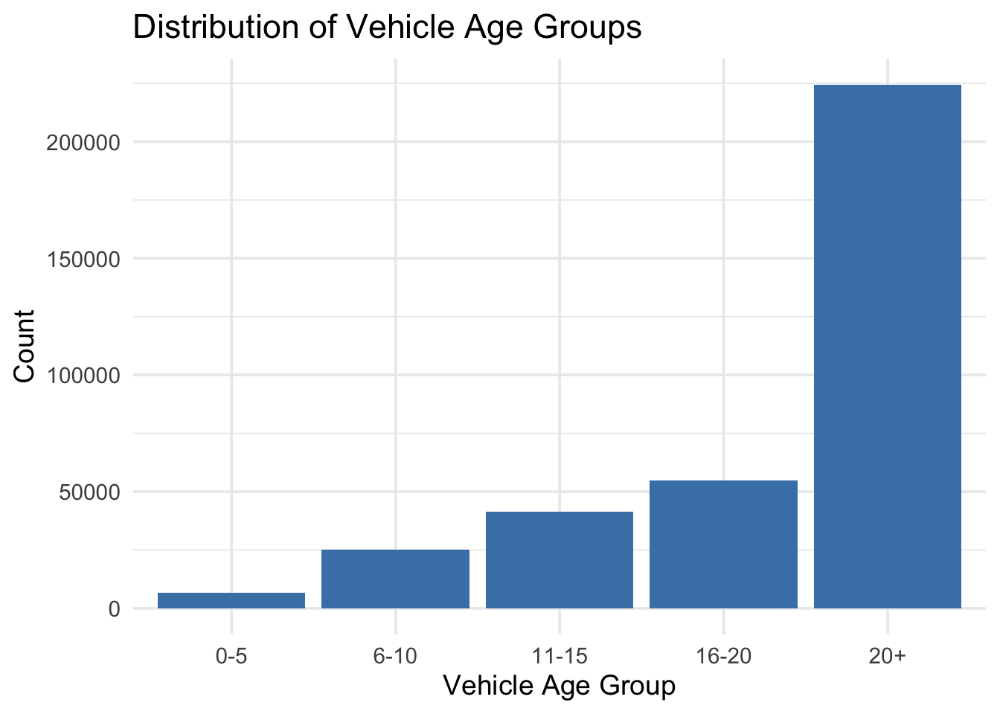
ggplot(
insurance_final,
aes(x = vehicle_age_group)
) +
geom_bar(fill = "steelblue") +
labs(
title = "Distribution of Vehicle Age Groups",
x = "Vehicle Age Group",
y = "Count"
) +
theme_minimal(base_size = 14)
Note
Most insured vehicles are 20 years old and above, which may suggests that they have higher maintenance and operational risks.
4.3.3 Distribution of Fuel Types
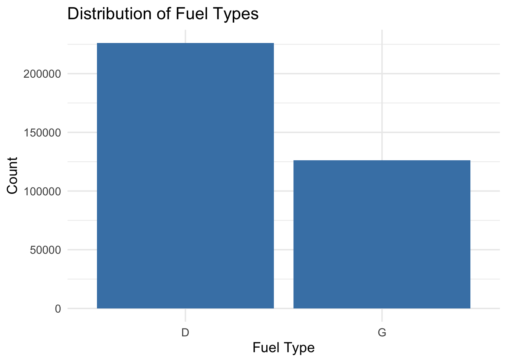
ggplot(
insurance_final,
aes(x = fuel_type)
) +
geom_bar(fill = "steelblue") +
labs(
title = "Distribution of Fuel Types",
x = "Fuel Type",
y = "Count"
) +
theme_minimal(base_size = 14)
Note
Most of the vehicles are powered by diesel instead of gasoline.
4.4 Portfolio Composition
4.4.1 Distribution of Policy Types
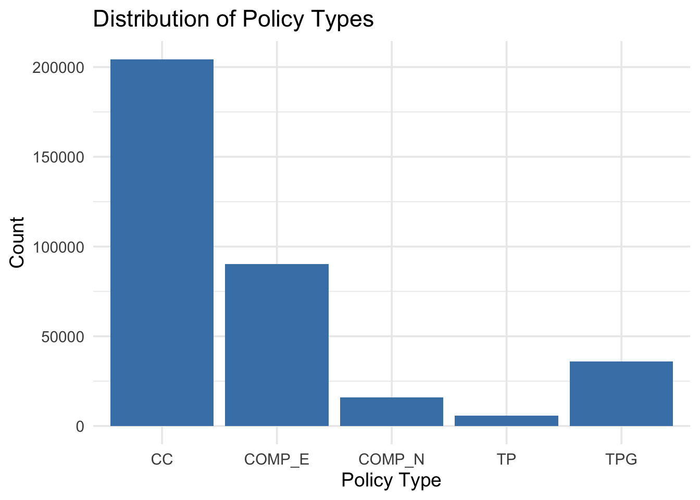
ggplot(
insurance_final,
aes(x = policy_type)
) +
geom_bar(fill = "steelblue") +
labs(
title = "Distribution of Policy Types",
x = "Policy Type",
y = "Count"
) +
theme_minimal(base_size = 14)
Note
The portfolio composition reveals that third-party liability combined with two or more additional coverage is the most common insurance purchased.
4.4.2 Distribution of Claim Occurrence
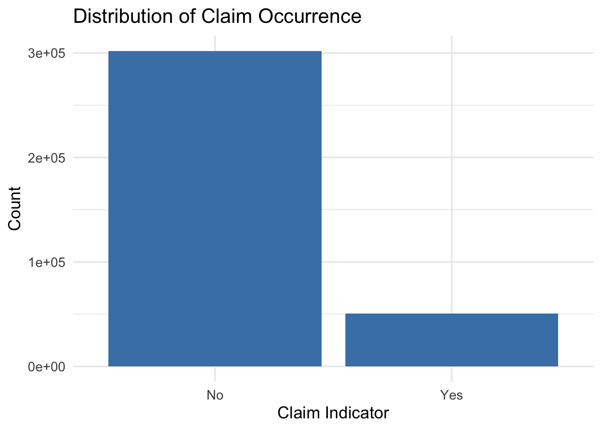
ggplot(
insurance_final,
aes(x = has_claim)
) +
geom_bar(fill = "steelblue") +
labs(
title = "Distribution of Claim Occurrence",
x = "Claim Indicator",
y = "Count"
) +
theme_minimal(base_size = 14)
Note
The portfolio is dominated by non-claim policies, which is not surprising in insurance portfolios where claims occur relatively infrequently.
4.5 Correlation Matrix
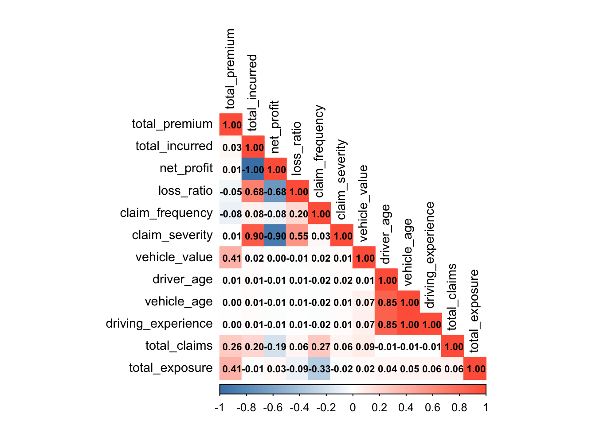
numeric_vars <- insurance_final %>%
select(
total_premium,
total_incurred,
net_profit,
loss_ratio,
claim_frequency,
claim_severity,
vehicle_value,
driver_age,
vehicle_age,
driving_experience,
total_claims,
total_exposure
)
cor_matrix <- cor(
numeric_vars,
use = "complete.obs"
)
corrplot(
cor_matrix,
method = "color",
type = "lower",
addCoef.col = "black",
tl.col = "black",
tl.cex = 0.9,
number.cex = 0.7,
col = colorRampPalette(
c("steelblue", "white", "tomato")
)(200)
)
Note
Correlation analysis was conducted on selected variables associated with portfolio profitability and volatility.
Driver age and driving experience demonstrate relatively weak direct relationships with profitability-related variables, with absolute correlation values ranging only between 0.01 and 0.02. This suggests that customer demographic characteristics alone may have limited explanatory power in predicting underwriting performance.
Similarly, vehicle value and vehicle age also exhibit weak correlations with profitability metrics, indicating that vehicle characteristics do not independently drive portfolio profitability to a substantial extent.
Among the profitability-related variables, claim frequency demonstrates the strongest associations with driver and vehicle-related attributes, although the relationships remain relatively modest at approximately 0.02 in absolute value.
5 EDA on Profitability Driver
This section applies appropriate bivariate visual analytics techniques to further investigate the relationship between variables and portfolio profitability. Further statistical test is applied to validate contributing factors.
5.1 Net Profit by Driver Age Group
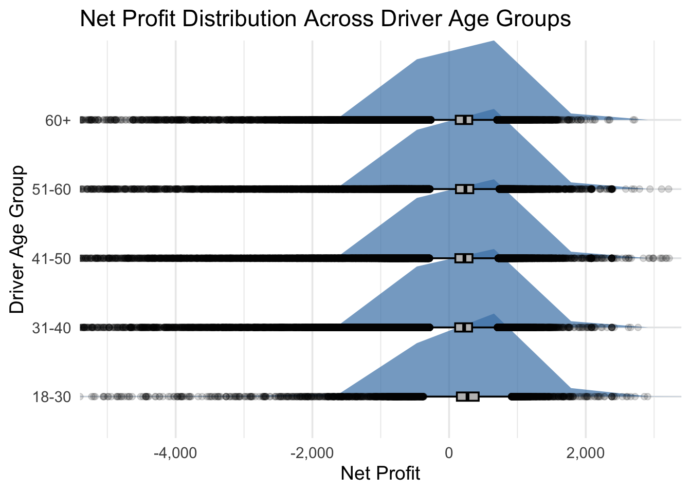
Kruskal-Wallis rank sum test
data: net_profit by age_group
Kruskal-Wallis chi-squared = 903.48, df = 4, p-value < 2.2e-16ggplot(
insurance_final,
aes(
x = net_profit,
y = age_group
)
) +
ggridges::geom_density_ridges(
fill = "steelblue",
alpha = 0.7,
scale = 1.2,
color = NA
) +
geom_boxplot(
aes(group = age_group),
width = 0.12,
fill = "gray",
color = "black",
outlier.alpha = 0.15
) +
coord_cartesian(xlim = c(-5000, 3000)) +
scale_x_continuous(labels = scales::comma) +
labs(
title = "Net Profit Distribution Across Driver Age Groups",
x = "Net Profit",
y = "Driver Age Group"
) +
theme_minimal(base_size = 14)
kruskal.test(
net_profit ~ age_group,
data = insurance_final
)
Note
The net profit distribution across different driver age groups is largely similar according to the ridgeline and boxplot.
Drivers between 18 to 30 years old drivers with 0 to 5 years of experience appear to exhibit a narrower negative-profit tail as compared to the rest.
Since the distribution of age groups is not normal, a Kruskal-Wallis test was performed to evaluate whether net profit differs significantly across the groups at 5% significance level.
The test results shows that p value is < 0.05, rejects the null hypothesis and suggests that net profit does differ significantly across driver age groups.
5.2 Net Profit by Driving Experience Groups
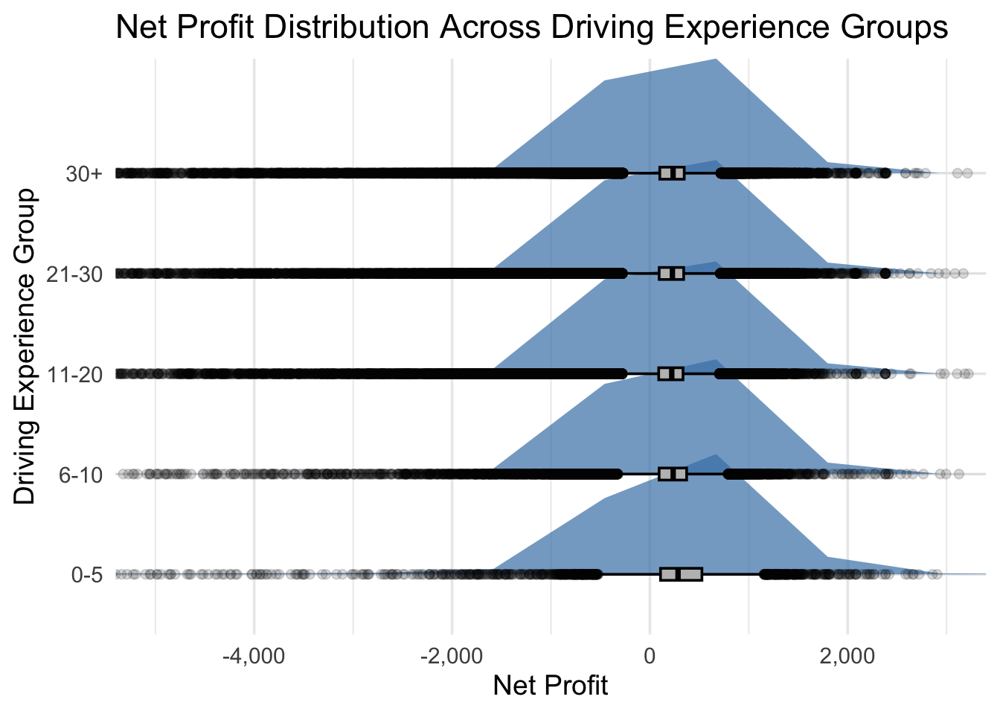
Kruskal-Wallis rank sum test
data: net_profit by experience_group
Kruskal-Wallis chi-squared = 810.42, df = 4, p-value < 2.2e-16ggplot(
insurance_final,
aes(
x = net_profit,
y = experience_group
)
) +
ggridges::geom_density_ridges(
fill = "steelblue",
alpha = 0.7,
scale = 1.2,
color = NA
) +
geom_boxplot(
aes(group = experience_group),
width = 0.12,
fill = "gray",
color = "black",
outlier.alpha = 0.15
) +
coord_cartesian(xlim = c(-5000, 3000)) +
scale_x_continuous(labels = scales::comma) +
labs(
title = "Net Profit Distribution Across Driving Experience Groups",
x = "Net Profit",
y = "Driving Experience Group"
) +
theme_minimal(base_size = 14)
kruskal.test(
net_profit ~ experience_group,
data = insurance_final
)
Note
The net profit distribution across different driving experience groups is largely similar according to the ridgeline and boxplot.
Drivers with 0 to 5 years of experience appear to exhibit a narrower negative-profit tail as compared to the rest.
Since the distribution of driving experience groups is not normal, a Kruskal-Wallis test was performed to evaluate whether net profit differs significantly across the groups at 5% significance level.
The test results shows that p value is < 0.05, rejects the null hypothesis and suggests that net profit does differ significantly across driver experience groups.
5.3 Net Profit by Policy Types
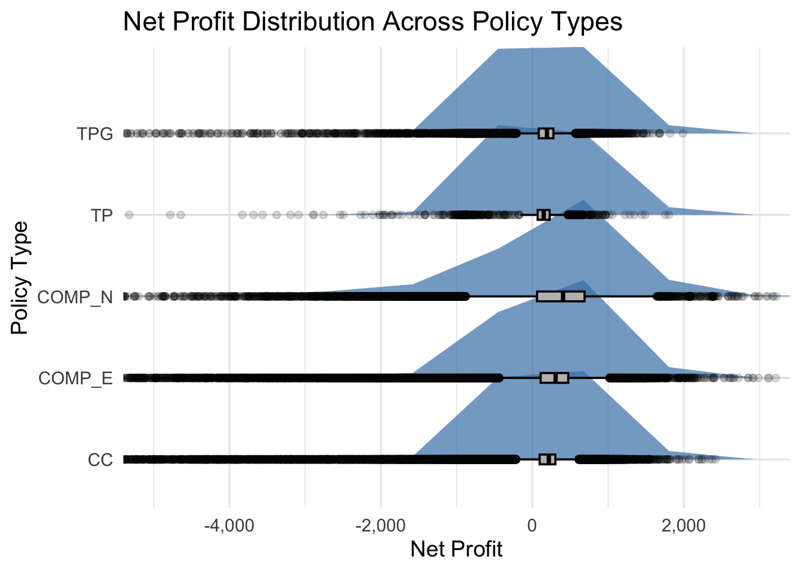
Kruskal-Wallis rank sum test
data: net_profit by policy_type
Kruskal-Wallis chi-squared = 15378, df = 4, p-value < 2.2e-16ggplot(
insurance_final,
aes(
x = net_profit,
y = policy_type
)
) +
ggridges::geom_density_ridges(
fill = "steelblue",
alpha = 0.7,
scale = 1.2,
color = NA
) +
geom_boxplot(
aes(group = policy_type),
width = 0.12,
fill = "gray",
color = "black",
outlier.alpha = 0.15
) +
coord_cartesian(xlim = c(-5000, 3000)) +
scale_x_continuous(labels = scales::comma) +
labs(
title = "Net Profit Distribution Across Policy Types",
x = "Net Profit",
y = "Policy Type"
) +
theme_minimal(base_size = 14)
kruskal.test(
net_profit ~ policy_type,
data = insurance_final
)
Note
The net profit distribution across different policy types are varied according to the ridgeline and boxplot.
Notably, basic third part liability coverage exhibits more concentrated profitability distributions while the rest have heavier negative and positive profit tails.
Since the distribution of policy types is not normal, a Kruskal-Wallis test was performed to evaluate whether net profit differs significantly across the groups at 5% significance level.
The test results shows that p value is < 0.05, rejects the null hypothesis and suggests that net profit does differ significantly across policy types.
6 Volatility & Loss Driver Analysis
This section applies appropriate bivariate visual analytics techniques to further investigate the relationship between variables and portfolio volatility. Further statistical test is applied to validate contributing factors.
6.1 Claim Frequency by Vehicle Age Groups
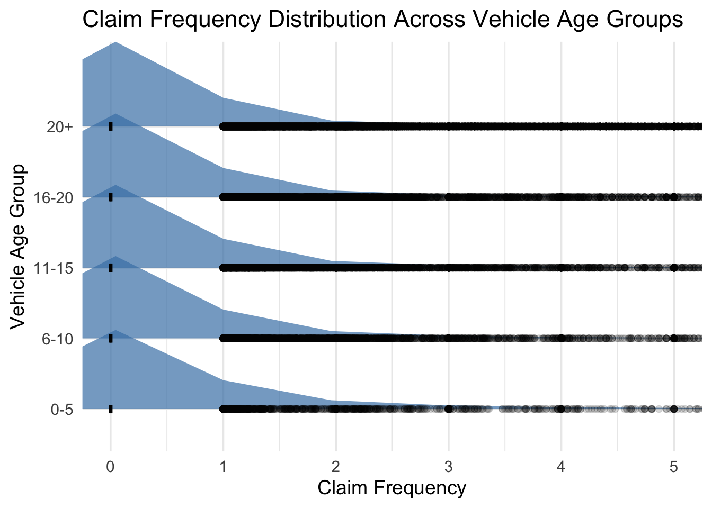
Kruskal-Wallis rank sum test
data: claim_frequency by vehicle_age_group
Kruskal-Wallis chi-squared = 484.43, df = 4, p-value < 2.2e-16ggplot(
insurance_final,
aes(
x = claim_frequency,
y = vehicle_age_group
)
) +
ggridges::geom_density_ridges(
fill = "steelblue",
alpha = 0.7,
scale = 1.2,
color = NA
) +
geom_boxplot(
aes(group = vehicle_age_group),
width = 0.12,
fill = "gray",
color = "black",
outlier.alpha = 0.15
) +
coord_cartesian(xlim = c(0, 5)) +
labs(
title = "Claim Frequency Distribution Across Vehicle Age Groups",
x = "Claim Frequency",
y = "Vehicle Age Group"
) +
theme_minimal(base_size = 14)
kruskal.test(
claim_frequency ~ vehicle_age_group,
data = insurance_final
)
Note
Older vehicles exhibit wider and more volatile claim frequency distributions, suggesting increased accident occurrence risk. Newer vehicles demonstrate relatively concentrated claim frequency behaviour, indicating more stable risk exposure.
Since the distribution of vehicle age groups is not normal, a Kruskal-Wallis test was performed to evaluate whether claim frequency differs significantly across the groups at 5% significance level.
The test results shows that p value is < 0.05, rejects the null hypothesis and suggests that claim frequency does differ significantly across vehicle age groups.
6.2 Claim Frequency by Driving Experience Groups
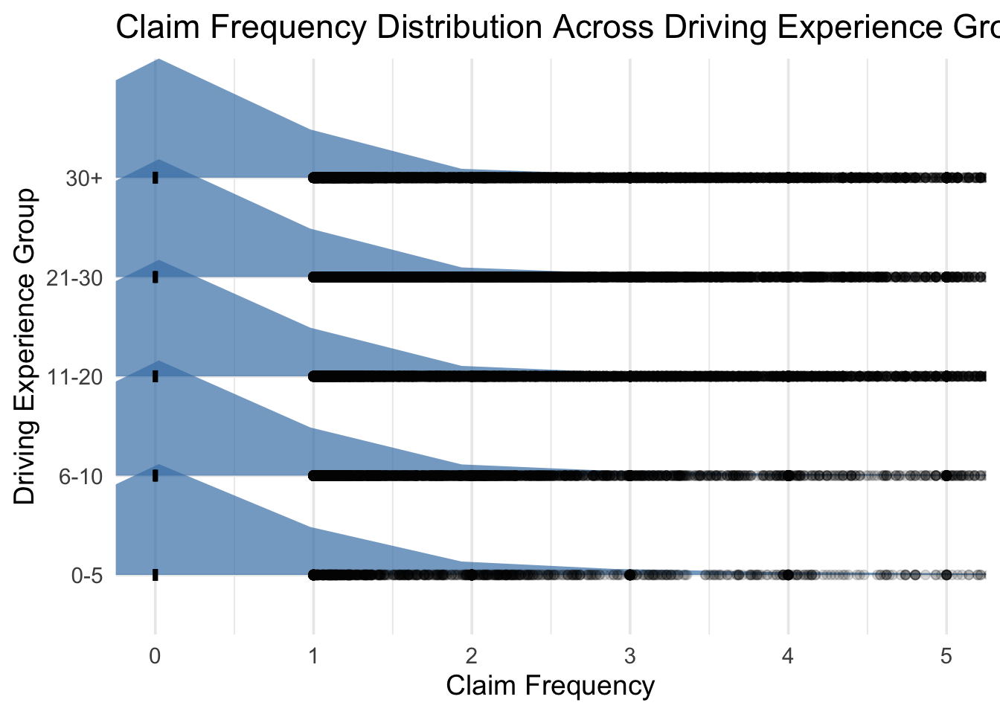
Kruskal-Wallis rank sum test
data: claim_frequency by experience_group
Kruskal-Wallis chi-squared = 505.72, df = 4, p-value < 2.2e-16ggplot(
insurance_final,
aes(
x = claim_frequency,
y = experience_group
)
) +
ggridges::geom_density_ridges(
fill = "steelblue",
alpha = 0.7,
scale = 1.2,
color = NA
) +
geom_boxplot(
aes(group = experience_group),
width = 0.12,
fill = "gray",
color = "black",
outlier.alpha = 0.15
) +
coord_cartesian(
xlim = c(0, 5)
) +
labs(
title = "Claim Frequency Distribution Across Driving Experience Groups",
x = "Claim Frequency",
y = "Driving Experience Group"
) +
theme_minimal(base_size = 14)
kruskal.test(
claim_frequency ~ experience_group,
data = insurance_final
)
Note
Drivers with higher driving experience appear to exhibit more outliers in frequency boxplot, suggesting increased accident occurrence volatility and greater exposure to repeated claim events.
Since the distribution of driving experience groups is not normal, a Kruskal-Wallis test was performed to evaluate whether claim frequency differs significantly across the groups at 5% significance level.
The test results shows that p value is < 0.05, rejects the null hypothesis and suggests that claim frequency does differ significantly across driving experience groups.
6.3 Claim Severity by Vehicle Age Groups
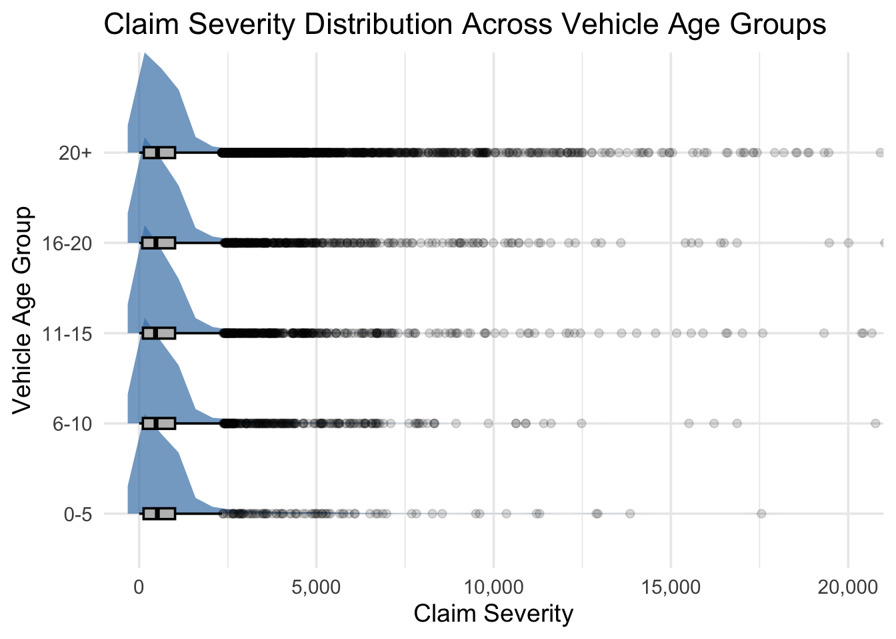
Kruskal-Wallis rank sum test
data: claim_severity by vehicle_age_group
Kruskal-Wallis chi-squared = 47.308, df = 4, p-value = 1.315e-09ggplot(
insurance_final,
aes(
x = claim_severity,
y = vehicle_age_group
)
) +
ggridges::geom_density_ridges(
fill = "steelblue",
alpha = 0.7,
scale = 1.2,
color = NA
) +
geom_boxplot(
aes(group = vehicle_age_group),
width = 0.12,
fill = "gray",
color = "black",
outlier.alpha = 0.15
) +
coord_cartesian(
xlim = c(0, 20000)
) +
scale_x_continuous(
labels = scales::comma
) +
labs(
title = "Claim Severity Distribution Across Vehicle Age Groups",
x = "Claim Severity",
y = "Vehicle Age Group"
) +
theme_minimal(base_size = 14)
kruskal.test(
claim_severity ~ vehicle_age_group,
data = insurance_final
)
Note
The claim severity distribution across different vehicle age groups demonstrates visible variability according to the ridgeline and boxplot.
Older vehicles appear to exhibit heavier positive claim severity tails, suggesting greater exposure to severe financial losses and elevated underwriting volatility.
Since the distribution of vehicle age groups is not normal, a Kruskal-Wallis test was performed to evaluate whether claim severity differs significantly across the groups at 5% significance level.
The test results shows that p value is < 0.05, rejects the null hypothesis and suggests that claim severity does differ significantly across vehicle age groups.
6.4 Claim Severity by Driving Experience Groups
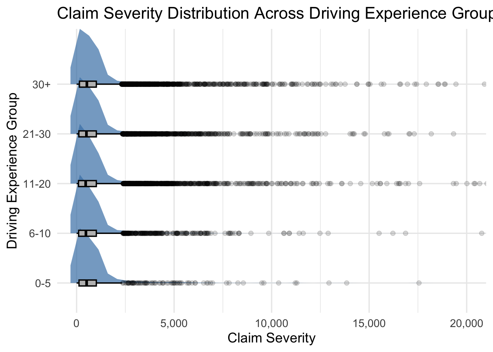
Kruskal-Wallis rank sum test
data: claim_severity by experience_group
Kruskal-Wallis chi-squared = 57.944, df = 4, p-value = 7.84e-12ggplot(
insurance_final,
aes(
x = claim_severity,
y = experience_group
)
) +
ggridges::geom_density_ridges(
fill = "steelblue",
alpha = 0.7,
scale = 1.2,
color = NA
) +
geom_boxplot(
aes(group = experience_group),
width = 0.12,
fill = "gray",
color = "black",
outlier.alpha = 0.15
) +
coord_cartesian(
xlim = c(0, 20000)
) +
scale_x_continuous(
labels = scales::comma
) +
labs(
title = "Claim Severity Distribution Across Driving Experience Groups",
x = "Claim Severity",
y = "Driving Experience Group"
) +
theme_minimal(base_size = 14)
kruskal.test(
claim_severity ~ experience_group,
data = insurance_final
)
Note
The claim severity distribution across different driving experience groups is relatively similar according to the ridgeline and boxplot.
Drivers with higher driving experience appear to have more outliers in severity boxplot, suggesting greater exposure to severe claim events and increased underwriting volatility.
Since the distribution of driving experience groups is not normal, a Kruskal-Wallis test was performed to evaluate whether claim severity differs significantly across the groups at 5% significance level.
The test results shows that p value is < 0.05, rejects the null hypothesis and suggests that claim severity does differ significantly across driving experience groups.
7 Temporal Trend Analysis
This section examines the temporal movement of portfolio profitability and claim behaviour across the observation years.
7.1 Profitability Trend
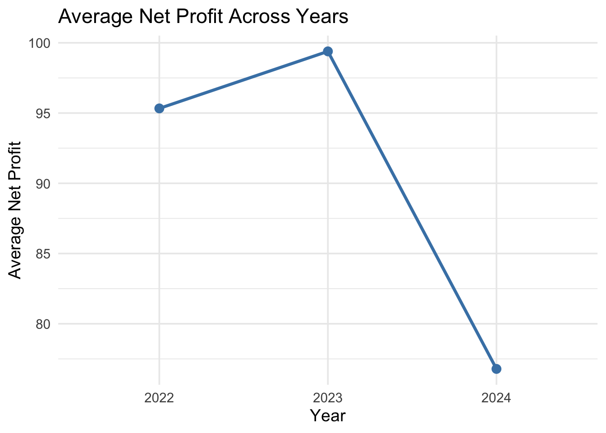
yearly_summary <- insurance_final %>%
group_by(year) %>%
summarise(
avg_profit = mean(net_profit, na.rm = TRUE)
)
ggplot(
yearly_summary,
aes(
x = year,
y = avg_profit,
group = 1
)
) +
geom_line(
color = "steelblue",
linewidth = 1.2
) +
geom_point(
color = "steelblue",
size = 3
) +
labs(
title = "Average Net Profit Across Years",
x = "Year",
y = "Average Net Profit"
) +
theme_minimal(base_size = 14)
Note
The average net profit across the years increased from 2022 to 2023, but decreased sharply in 2024. This suggests that underwriting performance initially improved but later deteriorated significantly over time.
7.2 Claim Trend
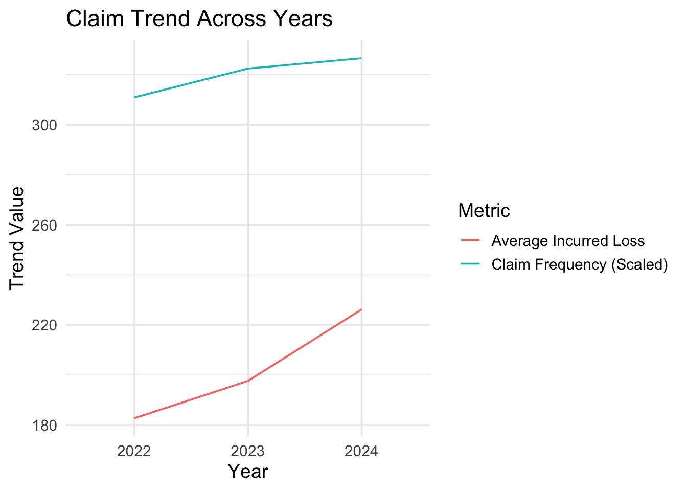
claim_trend <- insurance_final %>%
group_by(year) %>%
summarise(
avg_incurred = mean(total_incurred, na.rm = TRUE),
avg_claim_frequency = mean(claim_frequency, na.rm = TRUE)
)
ggplot(
claim_trend,
aes(x = year, group = 1)
) +
geom_line(
aes(y = avg_incurred, color = "Average Incurred Loss")
) +
geom_line(
aes(y = avg_claim_frequency * 1000,
color = "Claim Frequency (Scaled)")
) +
labs(
title = "Claim Trend Across Years",
x = "Year",
y = "Trend Value",
color = "Metric"
) +
theme_minimal(base_size = 14)
Note
The claim trend analysis suggests that claim frequency increased steadily from 2022 to 2024, indicating a gradual rise in accident occurrence rates and overall portfolio risk exposure over time.
At the same time, average incurred losses also increased progressively across the years, with a noticeably steeper increase between 2023 and 2024. This suggests that not only are claims occurring more frequently, but the financial severity of claims may also be worsening.
8. Conclusion
In conclusion, the analysis revealed that the portfolio is dominated by low-claim and low-loss policies, while a relatively small proportion of policies contributes disproportionately large financial losses.
Profitability analysis showed that policy type demonstrates clearer differences in portfolio performance as compared to individual demographic or vehicle characteristics alone. Although driver age, driving experience, vehicle age, and vehicle value exhibit weak linear correlations with profitability metrics, statistical testing confirmed that net profit still differs significantly across the assessed customer and vehicle variables.
Volatility analysis showed that older vehicles and more experienced drivers are associated with wider claim frequency and claim severity distributions.
Temporal trend analysis revealed deteriorating portfolio performance over time. Claim frequency and incurred losses increased steadily from 2022 to 2024, while average profitability declined sharply in 2024.
Overall, the visual analytics techniques have uncovered hidden portfolio risk patterns and profitability drivers.